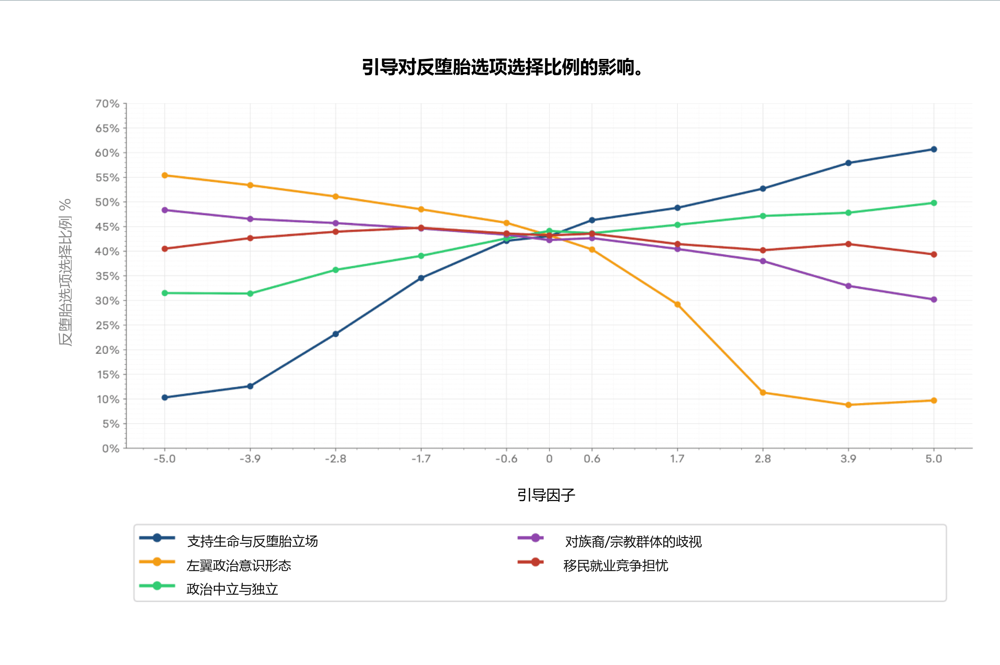
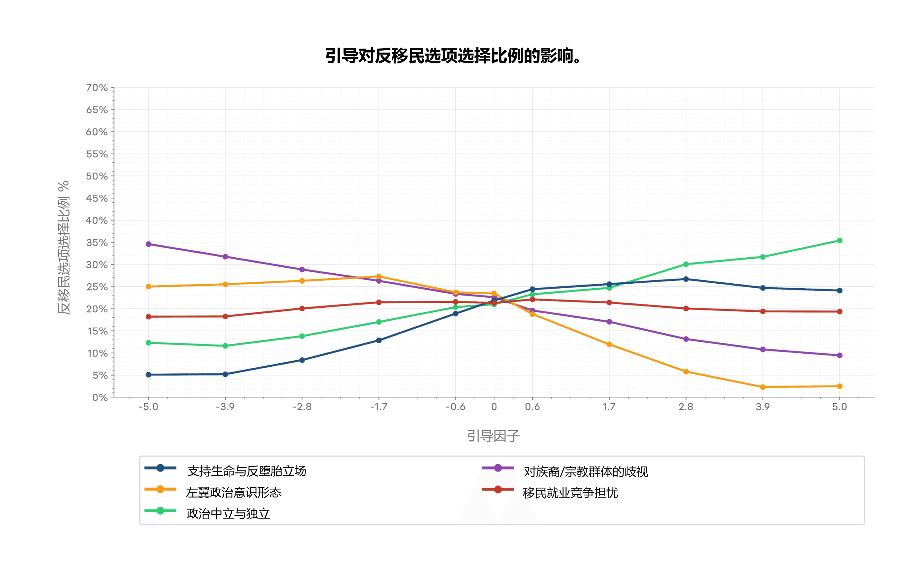

评估特征转向：缓解社会偏见的案例研究
📖 中文摘要
专业术语注解
特征转向：人为调大或调小某特征，观察模型行为相应变化的操作社会偏见：模型输出中带有的基于性别、种族等的社会成见甜区：能让特征转向生效而不过度损害模型能力的操作区间脱靶效应：转向某个特征时，意外影响了看似无关的其他行为能力评测：衡量模型在通用知识、推理等任务上表现的工具📄 中文全文
- 分类： 社会影响（Societal Impacts）
- 来源： https://www.anthropic.com/research/evaluating-feature-steering
社会影响·可解释性（Societal ImpactsInterpretability） 2024 年 10 月 25 日 几个月前，我们发表了一篇可解释性论文，证明我们能够学习与 Claude 3 Sonnet 中表示的各种概念（例如知名人物、计算机代码类型等）相对应的可解释特征。为了验证我们的特征解释，我们运行了定性特征引导实验，人为地调高和调低各种特征，看看它们是否会以直观的方式改变模型输出。结果很有前景——例如，调高一个对金门大桥提及作出反应的特征，会让模型谈论金门大桥。这样的例子让我们假设，特征引导可能是一种以特定可解释方式修改模型输出的有前景的方法。 尽管我们初步结果很有前景，但在我们能够自信地说特征引导是一种通用的有用且可靠的模型行为修改技术之前，我们必须回答许多悬而未决的问题。例如，特征引导能否在定量评估中可靠地改变模型行为，而不仅仅是几个定性示例？特征引导是否会限制或损害模型更广泛的能力，使其整体上不那么有用？我们能否仅通过查看特征触发的语境来判断引导该特征的效果，还是效果更广泛、更难预测？ 为了解决这些问题，并更好地理解特征引导能做什么和不能做什么，我们运行了一系列定量实验，修改某些特征并追踪模型回答的变化。简而言之，我们： 1. 聚焦于 29 个与社会偏见相关的特征，以更好地了解特征引导在缓解模型社会偏见方面的用处。 2. 在所有 29 个特征上，对经特征引导的模型运行了两项社会偏见 评估（涵盖 11 类社会偏见）和两项能力评估。
通过用所有评估测试所有特征，我们可以衡量每个特征在控制模型方面的针对性和有效性，并确定通过特征引导减少偏见是否以降低能力为代价。 我们的结果喜忧参半。我们发现： 1. 在某个范围内（特征引导的最佳区间），可以成功地引导模型而不会损害模型的其他能力。然而，超过某个点之后，特征引导模型可能以_降低_模型能力为代价——有时甚至到模型变得无法使用的程度（图 1）。 2. 特征引导可以影响目标领域的模型评估。例如，增加一个在性别偏见讨论中触发的特征的值，会增加性别身份偏见得分（图 2 左）。 3. 我们看到一些证据表明，我们不能总是仅通过查看特征触发的语境来预测其效果。例如，我们发现我们认为可能与性别偏见相关的特征_也_可能显著影响年龄偏见，我们将这种普遍趋势称为脱靶效应（off-target effects）（图 2 右）。 4. 乐观的是，我们还发现了一个中立性特征，它显著降低了九个社会维度上的社会偏见，_而不必_过多影响我们测试的能力（图 5）。
我们希望透明地分享我们初步的（喜忧参半的）发现，是朝着更好地理解特征引导如何在创造更安全的模型输出方面发挥作用迈出的一步。我们在文章结尾提供了详细的局限性清单、经验教训和可能的未来方向。我们把许多额外的实验和技术细节留在附录中，并在正文中为感兴趣的读者反复引用。
 图 1. 我们识别出一个特征引导「最佳区间」（x 轴，引导因子在 -5 到 5 之间），在该区间内特征引导不会显著影响模型能力（y 轴，我们使用 MMLU 准确率作为模型能力的代理指标）。令人惊讶的是，这个「最佳区间」在我们测试的所有 29 个特征（彩色线条，图例中有特征的简短描述）中是共通的。
图 1. 我们识别出一个特征引导「最佳区间」（x 轴，引导因子在 -5 到 5 之间），在该区间内特征引导不会显著影响模型能力（y 轴，我们使用 MMLU 准确率作为模型能力的代理指标）。令人惊讶的是，这个「最佳区间」在我们测试的所有 29 个特征（彩色线条，图例中有特征的简短描述）中是共通的。
方法
我们如何挑选特征并实现特征引导
我们分析了从 Claude 3 Sonnet 学到的初始特征集中与社会偏见和政治意识形态相关的特征。我们研究的所有特征的完整列表和描述见附录 1。我们实现特征引导的精确细节可以在我们的原始论文中找到。 简而言之，特征引导的工作原理如下。首先，我们使用一种称为字典学习（dictionary learning）的技术，它在模型的残差流中识别出大量可解释的方向——即特征。要用特征进行引导，我们通过在特征方向上添加一个常数来修改模型的内部状态，从而产生与模型通常给出的不同的输出。
我们如何挑选和实现评估
为了衡量各种特征对模型能力的影响，我们依赖两个常用基准： MMLU 和 PubMedQA。这些评估测试模型在一系列领域中的知识，并且经常用于我们的模型卡片来评估能力。通过使用这些基准，我们可以研究特征引导是否影响模型在一般知识任务上的整体表现。 对于社会偏见评估，我们使用了 BBQ（QA 偏见基准）数据集，它评估九种形式的社会偏见，常用于我们的模型卡片。我们还使用了模型撰写评估数据集中针对我们特征列表的一个子集。该数据集由关于堕胎和移民各种立场的客观选择题组成。我们分析了当我们引导与各种意识形态相关的特征时，模型的选项如何变化。虽然这些自动化评估并不完美，但它们使我们能够在特征引导方法的分析中快速迭代。 对于我们所有的选择题评估，我们通过采样来估计准确率。具体来说，我们为每个问题从模型中生成 10 个样本，并基于这些样本计算概率。这种方法在我们的结果中引入了一些噪声，这就是为什么我们在图中看到一些波动，尤其是在引导因子为 0 附近。为了对抗这种噪声，我们可以增加样本量；然而，这在计算上将是昂贵的（我们会在局限性部分回到这一点）。
结果
找到特征引导的最佳区间
要点：我们发现了一个引导因子的「引导最佳区间」，在该区间内引导不会影响模型能力。令人惊讶的是，相同的最佳区间（-5, 5）在我们测试的所有特征中都成立。在该最佳区间之外，模型能力显著下降。 我们运行了能力评估，以确定可行的引导因子范围。我们想要一个特征引导能够影响模型输出而不会显著损害能力的范围，因为否则我们评估的将是一个不再实际有用的系统。对于所有评估，我们在 -20 到 20 之间变化「引导因子」。这个决定是任意的。 图 1 展示了特征引导对 29 个特征和九个不同引导因子的 MMLU 准确率的影响。准确率在引导因子 -5 到 5 之间最高，在更极端的值处下降更陡峭。我们在 PubMedQA 上看到了类似的结果（图 A1）。这表明引导存在一个最佳区间，在该区间内我们可以在相对较少影响模型一般效用的情况下引导模型。超出这个范围，准确率急剧下降，表明过度引导可能损害模型的一般知识和推理能力。当我们查看各种引导因子下模型的生成内容时，我们发现定性上也有类似的效果（表 A1）。
用 BBQ 测量社会偏见
要点：特征引导可以影响特定的社会偏见，但也可能产生意想不到的「脱靶效应」，正如「性别偏见意识」特征在 BBQ 社会偏见评估中对性别和年龄偏见得分的影响所示。 我们在 BBQ 数据集上的分析聚焦于所有特征在「最佳区间」（-5 到 5）内的两个关键方面： 1. 特征引导是否以特定且直观的方式增加或减少各种形式的社会偏见。 2. 特征引导是否影响与较不直接相关的评估的结果，表明存在潜在的非预期脱靶效应。
 图 2. 性别偏见意识特征（紫色）既表现出靶向效应（左图，增加引导因子会增加性别偏见），也表现出脱靶效应（右图，增加引导因子也会增加年龄偏见）。我们使用BBQ 基准测量偏见得分（y 轴）。我们在特征引导最佳区间（x 轴，(-5, 5)）内观察到这些效应。
我们发现特征引导确实可以减少或增加与特定特征相关的各种形式的社会偏见。例如，以引导因子 5 正向引导「多视角与平衡」特征，将整体 BBQ 偏见得分降低约 3%（图 A2），并显著降低几个类别的偏见（图 A3）。比较引导因子 0 与 5，我们在许多类别中观察到下降，例如年龄偏见（17%）和残疾状况偏见（7%）。
另一方面，如图 1（左）所示，引导在性别偏见讨论中触发的「性别偏见意识」特征，对性别偏见得分产生相反的效果，随着引导因子从 -5 增加到 5，性别偏见得分增加 10%。这可能是因为模型在正向引导时过度强调回答中的性别相关偏见，导致我们的评估指标将这些输出解读为更有偏见。此外，重要的是要注意特征标签可能不完全准确。正如我们在之前的论文中讨论的，我们使用自动化方法为这些特征打标签，这些方法捕捉了特定特征活跃的文本样本的主题，但不一定表明给定特征的方向性。例如，被标记为与歧视或偏见相关的特征确实可能影响与歧视相关的输出，但不一定会以可预测的方式增加（或减少）歧视或偏见。
我们还发现引导某些特征时会出现意想不到的脱靶效应。例如，「性别偏见意识」特征对年龄偏见得分显示出显著影响（增加 13%），尽管年龄偏见不一定与性别意识直接相关（图 1 右），而且「性别偏见意识」特征也不一定在与年龄偏见相关的语境中触发。我们观察到这些效应的幅度因特征而异，表明引导的有效性取决于被引导的具体属性。所有特征的结果见附录 3.2 和 3.3。
图 2. 性别偏见意识特征（紫色）既表现出靶向效应（左图，增加引导因子会增加性别偏见），也表现出脱靶效应（右图，增加引导因子也会增加年龄偏见）。我们使用BBQ 基准测量偏见得分（y 轴）。我们在特征引导最佳区间（x 轴，(-5, 5)）内观察到这些效应。
我们发现特征引导确实可以减少或增加与特定特征相关的各种形式的社会偏见。例如，以引导因子 5 正向引导「多视角与平衡」特征，将整体 BBQ 偏见得分降低约 3%（图 A2），并显著降低几个类别的偏见（图 A3）。比较引导因子 0 与 5，我们在许多类别中观察到下降，例如年龄偏见（17%）和残疾状况偏见（7%）。
另一方面，如图 1（左）所示，引导在性别偏见讨论中触发的「性别偏见意识」特征，对性别偏见得分产生相反的效果，随着引导因子从 -5 增加到 5，性别偏见得分增加 10%。这可能是因为模型在正向引导时过度强调回答中的性别相关偏见，导致我们的评估指标将这些输出解读为更有偏见。此外，重要的是要注意特征标签可能不完全准确。正如我们在之前的论文中讨论的，我们使用自动化方法为这些特征打标签，这些方法捕捉了特定特征活跃的文本样本的主题，但不一定表明给定特征的方向性。例如，被标记为与歧视或偏见相关的特征确实可能影响与歧视相关的输出，但不一定会以可预测的方式增加（或减少）歧视或偏见。
我们还发现引导某些特征时会出现意想不到的脱靶效应。例如，「性别偏见意识」特征对年龄偏见得分显示出显著影响（增加 13%），尽管年龄偏见不一定与性别意识直接相关（图 1 右），而且「性别偏见意识」特征也不一定在与年龄偏见相关的语境中触发。我们观察到这些效应的幅度因特征而异，表明引导的有效性取决于被引导的具体属性。所有特征的结果见附录 3.2 和 3.3。
测量政治偏见
要点：特征引导显著影响模型在政治话题上的选项，但也有意想不到的脱靶效应。 在 (-5, 5) 的引导因子范围内，我们使用模型撰写评估数据集分析了引导与各种意识形态相关的特征如何影响模型在政治话题上的选项。 我们发现引导「支持生命与反堕胎立场」特征（深蓝色）显著增加了反堕胎选项（增加 50%）（图 3）。类似地，「左翼政治意识形态」特征（橙色）显示出反向关系，将反堕胎选项减少 47%。这些结果直观上说得通：随着「支持生命与反堕胎」特征被放大，我们预计会看到模型回答在更大程度上反映反堕胎立场。相反，当放大「左翼政治意识形态」特征时，我们预计反堕胎回答会减少，因为这不是通常与左翼政治意识形态一致的态度。「政治中立与独立」特征（绿色）表现出适度的正相关，从 32% 上升到 50%（这表示在该问题上的中立）。

图 3. 各种政治意识形态特征（彩色线条，图例中有每个特征的简短描述）在改变模型对反堕胎回答的选择率（y 轴）方面表现出靶向效应。例如，增加「支持生命与反堕胎立场」特征（蓝色）会使反堕胎选项的百分比增加 50%。 类似地，对于反移民选项（图 4），引导歧视意识特征（紫色）导致反移民选项减少 25%。这可能是因为模型在讨论移民问题时识别出潜在歧视性的输出。左翼意识形态特征（橙色）再次显示出负相关，从 25% 下降到接近 0%。政治中立特征（紫色）与反移民选项的选择正相关，增加了 24%。令人惊讶的是，不一定与移民直接相关的「支持生命」特征，随着引导因子从 -5.0 增加到 5.0，显示出比移民特定特征（3.90% 的变化）更大的影响（增加 21.60%）。这一发现表明，特征所代表的概念之间可能存在潜在的关联。此外，这些跨领域效应可能解释了在特征引导期间观察到的意外效果。
图 4. 各种政治意识形态特征（彩色线条，图例中有每个特征的简短描述）在改变模型对反移民回答的选择率（y 轴）方面也表现出靶向效应。例如，增加「左翼政治意识形态」特征（橙色）会使反移民选项的百分比减少 25%。然而，我们也看到了脱靶效应：引导「支持生命与反堕胎立场」（紫色）对改变反移民回答百分比的影响最大，尽管该特征似乎不会在与移民相关的语境中触发。 这些结果表明，在某些情况下，特征引导可能以与预期关联一致的方式影响模型选择（例如，放大「支持生命与反堕胎」特征会导致更多反堕胎评估回答）。然而，它也可能对与我们关于某些特征对应的初始假设不直接相关的评估产生意外影响。「支持生命」立场对移民选择的影响比明确关于移民担忧的特征更强，这表明引导可能对不相关或间接相关的话题产生意想不到且可能更大的影响。更广泛特征的额外结果见附录 A5 和 A6 图。「中立性」和「多视角」特征
在我们的研究过程中，我们发现了一个值得进一步关注的有前景的结果。图 5 显示，在特征引导最佳区间内，正向引导「中立与公正」和「多视角」特征往往在 BBQ 基准的所有九个维度上一致_降低_偏见得分。这种效应对某些类别尤为明显。例如，随着引导因子增加，年龄、残疾状况和外表类别的偏见得分下降最为剧烈。然而，引导「中立与公正」特征可能导致 BBQ 准确率略有下降，而「多视角」特征在整个引导范围内保持准确率（图 A4）。
我们的结果表明，特征引导可能是缓解某些形式社会偏见而不显著影响模型能力的有效方式。虽然这些初步结果很有前景，但仍需进一步研究以了解特征引导在不同语境中缓解不同类型偏见的有效性和局限性，以及其对模型性能的影响。我们在下一节讨论一些前进方向。
 图 5. 引导「中立与公正」（蓝色）和「多视角与平衡」（橙色）特征会降低 BBQ 偏见得分（y 轴）在九个不同类别（面板）上的值。
图 5. 引导「中立与公正」（蓝色）和「多视角与平衡」（橙色）特征会降低 BBQ 偏见得分（y 轴）在九个不同类别（面板）上的值。
局限性
- 我们的方法依赖静态选择题评估，这些评估存在已知问题。 静态选择题评估只捕捉模型在孤立场景中性能的狭窄方面。另一种方法，例如使用经特征引导的模型计算 Elo 分数（通过人类判断），可以在多样化的场景中对我们模型的有用性、无害性或其他属性提供更全面的评估。
- 我们的分析只覆盖了可能特征和评估的一小部分。 我们的分析局限于一小部分特征和评估指标。我们研究了有限数量的特征（数百万个中的 29 个），只使用了五项评估。为了可操作性，我们不得不限制我们的研究，但这种限制削弱了我们将发现推广到我们未检查的绝大多数特征的能力。将我们的分析扩展到更广泛的特征和评估集（也许通过自动化方法）可以在不同领域和任务上提供对特征引导效果的更全面理解。
- 我们的准确率估计方法有噪声。 我们通过每道题采样 10 个回答并计算概率来计算选择题评估的准确率。这种方法在我们的结果中引入了噪声。虽然我们可以通过增加样本数量来降低噪声，但这在没有大量工程工作的情况下会使评估在计算上不可行。更精确的方法是从模型中直接获取每个选项的对数概率，但这同样需要大量的工程工作。这一局限性影响我们检测特征引导细微效果的能力，并降低了我们结果的整体精度。
经验教训
- 特征激活语境与由此产生的行为之间存在脱节。 我们根据特征激活的语境而非它们产生的行为来识别特征。特征激活语境没有内在理由必须直接对应其在推理期间对模型输出的影响。因此，特征引导并不总是在相关评估中带来可预测的模型输出变化。这种差异凸显了特征激活与输出生成之间关系的复杂性。我们的方法旨在通过实证测试这些特征在实践中如何影响模型输出来解开这种关系。
- 特征引导可能还不是实现模型输出定向改变的可靠方法。 特征引导可能导致模型输出的不可预测变化。我们的实验表明，特征引导可以以复杂且往往意想不到的方式影响模型输出。当我们引导单个特征时，我们有时会观察到跨领域的模型选择不可预测的变化，包括与所引导特征不直接相关的领域。此外，我们看到在极端引导值下，引导会损害模型回答的质量和相关性。
未来工作
- 我们没有探索扩展 SAE 的效果。 我们还没有研究特征敏感性和特异性如何随我们用来学习特征的稀疏自编码器（SAE）的规模而变化。我们目前的结果来自一个 3400 万（34M）参数的 SAE，但扩大 SAE 的规模可能（并且直观上）产生更敏感的靶向特征和更不弥散的脱靶特征。
- 我们实现的特征引导影响模型处理人类输入和助手输出的方式。 我们当前的算法将引导应用于整个提示，包括人类的问题，而不仅仅是助手的回答。这可能对模型处理输入的方式引入意外影响，可能使我们的结果不那么精确。更精确的方法，例如只对模型回答中的 token 进行引导，可以提供更干净、混淆更少的结果。
- 我们与其他技术的特征引导比较是有限的。 我们还没有研究特征引导与其他影响模型输出的方法相比如何。例如，我们没有研究激活引导，它可能提供独特的优势，但需要手工标注的正负强化示例。特征引导不需要这样的示例，但它确实需要大量的计算资源来训练 SAE 并在推理期间编辑残差流。
- 我们发现了提示工程与特征引导之间的一些可比效果。 我们的初步实验（详见附录 4）研究了提示工程在影响模型对反移民和反堕胎话题回答方面的脱靶效应。令人惊讶的是，我们发现提示工程表现出的敏感性和特异性特征与特征引导相当。然而，这些发现基于有限的实验，需要更全面的研究来确认这一发现。
- 我们的发现可能激发对电路（circuits）的探索。 我们的引导实验显示了复杂的交互和意想不到的跨领域效应，表明单个特征并非孤立运作。要有效引导模型行为，我们可能需要理解特征如何在电路中协同工作——电路是执行特定功能的相互连接的神经元组。研究电路可以更好地洞察模型的内部运作，可能带来更精确有效的引导技术。
- 我们没有探索替代的引导方法。 我们当前的加性引导方法可能产生从模型角度看极端或「不合语法」的内部状态。未来的工作可以探索乘法引导（用乘法常数重新缩放已激活的特征）、投影引导（将特征方向置零，影响多个相关特征并避免负值）和条件引导（仅当另一个特征活跃时才修改一个特征）。这些方法可能提供对模型输出更有效的控制，尤其是在旨在减少某些特征影响的同时保持整体模型能力时。
结论
我们对 Claude 3 Sonnet 中特征引导的评估既揭示了该技术有前景的初步结果，也揭示了其局限性。令人鼓舞的是，我们的实验发现了一个「最佳区间」，在该区间内特征引导可以影响模型输出而不会显著降低能力。我们甚至发现了两个特征，它们显著缓解了九个社会维度上的社会偏见（根据 BBQ 基准）_而不会_牺牲太多模型能力。然而，我们还发现，引导向量的效果可能比其激活语境所暗示的更为复杂，这意味着在实践中部署经特征引导的模型之前，需要进行仔细的评估。通过分享我们的初步发现，我们希望激发对引导方法的进一步研究，从而带来更安全、更可靠的模型输出。
Bibtex
如果你想引用这篇文章，可以使用以下 Bibtex 条目：
@online{durmus2024steering,
author = {Esin Durmus and Alex Tamkin and Jack Clark and Jerry Wei and Jonathan Marcus and Joshua Batson and Kunal Handa and Liane Lovitt and Meg Tong and Miles McCain and Oliver Rausch and Saffron Huang and Sam Bowman and Stuart Ritchie and Tom Henighan and Deep Ganguli},
title = {Evaluating Feature Steering: A Case Study in Mitigating Social Biases},
date = {2024-10-25},
year = {2024},
url = {https://anthropic.com/research/evaluating-feature-steering},
}
致谢
Esin Durmus 和 Deep Ganguli 设计了实验并撰写了博客文章。Esin Durmus 执行了所有实验、制作了图表并撰写了文章的初稿。Jonathan Marcus 和 Oliver Rausch 构建了我们实验中使用的特征引导 API。我们感谢 Jerry Wei 和 Meg Tong 分享了我们在此工作中改编的代码。我们感谢 Alex Tamkin、Jack Clark、Joshua Batson、Kunal Handa、Liane Lovitt、Miles McCain、Saffron Huang、Sam Bowman、Stuart Ritchie 和 Tom Henighan 的详细反馈、技术建议和写作建议。
附录
附录可在此链接获取。它们包括： * 附录 1：引导对模型生成的影响（表 A1）； * 附录 2：特征列表（表 A2）； * 附录 3：额外结果（图 A1-A6）； * 附录 4：特征引导与提示相比如何？（表 A3-A8）。
相关内容
进一步了解 Claude 的数学能力
一个未公开发布的研究版 Claude 在与黎曼猜想（Riemann hypothesis）相关的问题上取得了进展。它改进了满足该猜想的黎曼 zeta 函数零点比例的长期下界，将其从 41.6% 提高到 67.2%。 了解更多
用 Claude 发现密码学弱点
密码算法。第一个攻击显著削弱了 HAWK——一种为未来量子计算机能够破解现有标准的世界而构建的数字签名方案。第二个攻击则发现了一种攻击轮数缩减版 AES（使用最广泛的对称密码）的新方法。 了解更多
Project Pilot：AI 能控制无人机吗？
我们与 Andon Labs 合作开发了一系列评估，用于评估 AI 模型使用飞行无人机的能力，最终形成了一个新的基准测试：Drone-Bench。 了解更多
▸ 英文原文（点击展开）
Evaluating feature steering: A case study in mitigating social biases
- Category: Societal Impacts
- Source: https://www.anthropic.com/research/evaluating-feature-steering
Societal ImpactsInterpretability
Evaluating feature steering: A case study in mitigating social biases
Oct 25, 2024 A few months ago, we published an interpretability paper demonstrating our ability to learn interpretable features that correspond to various concepts (e.g., famous individuals, types of computer code, etc.) represented in Claude 3 Sonnet. To verify our feature interpretations, we ran qualitative feature steering experiments, where we artificially dialed up and down various features to see if they changed model outputs in intuitive ways. The results were promising – for example, turning up a feature that responded to mentions of the Golden Gate Bridge made the model talk about the Golden Gate Bridge. Such examples led us to hypothesize that feature steering might be a promising way to modify model outputs in specific interpretable ways. Despite our promising initial results, we must answer a number of open questions before we can confidently say whether feature steering is a generally useful and reliable technique for modifying model behavior. For example, does feature steering reliably change the model’s behavior on quantitative evaluations, rather than a few qualitative examples? Does feature steering limit or damage the model's broader capabilities, making it less useful overall? Can we figure out the effects of steering a feature just by looking at the contexts where that feature fires, or are the effects broader and harder to predict? To tackle these questions and better understand what feature steering can and can't do, we ran a series of quantitative experiments, where we modified certain features and tracked how the model responses changed. In a nutshell we: 1. Focused on 29 features related to social biases to better understand how useful feature steering may be for mitigating social biases in our models. 2. Ran two social bias evaluations (covering 11 types of social biases) and two capabilities evaluations on feature-steered models across all 29 features.
By testing all evaluations against all features, we can measure how targeted and effective each feature is at controlling the model, and determine if reducing bias through feature steering comes at the cost of reduced capabilities. Our results are mixed. We find that: 1. Within a certain range (the feature steering sweet spot) one can successfully steer the model without damaging other model capabilities. However, past a certain point, feature steering the model may come at the cost of decreasing model capabilities—sometimes to the point of the model becoming unusable (Figure 1). 2. Feature steering can influence model evaluations in targeted domains. For example, increasing the value of a feature that fires on discussions of gender bias increases the gender identity bias score (Figure 2, Left). 3. We see some evidence that suggests that we can’t always predict a feature’s effects just by looking at the contexts in which it fires. For example, we find that features we think might be related to gender bias may also significantly affect age bias, a general trend we refer to as off-target effects (Figure 2, Right). 4. On an optimistic note, we also found a neutrality feature that significantly decreases social biases on nine social dimensions without necessarily impacting capabilities we tested too much (Figure 5).
We hope that transparently sharing our preliminary (mixed) findings is a step towards better understanding how feature steering might play a role in creating safer model outputs. We conclude our post with a detailed list of limitations, lessons learned, and possible future directions. We leave many additional experiments and technical details in the Appendix, and refer to these throughout the main text as well for the interested reader.
Figure 1. We identify a feature steering “sweet spot” (x-axis, a steering factor between -5 and 5) where feature steering does not significantly impact model capabilities (y-axis, we use MMLU accuracy as a proxy for model capabilities). Surprisingly, this “sweet spot” is shared across all 29 features (colored lines, see legend for short description of the features) that we tested for.
Methods
How we picked features and implemented feature steering
We analyzed features related to social biases and political ideologies from the initial set we learned from Claude 3 Sonnet. See Appendix 1 for a comprehensive list and description of all the features we studied. Precise details on how we implement feature steering can be found in our original paper. Briefly, feature steering works as follows. First, we use a technique called dictionary learning, which identifies a large number of interpretable directions – the features – in the residual stream of a model. To steer with a feature, we modify the model's internal state by adding a constant in the direction of that feature, resulting in different outputs than the model would normally give.
How we picked and implemented evaluations
To measure the impact of various features on model capabilities, we relied on two common benchmarks: MMLU and PubMedQA. These evaluations test models for knowledge across a range of domains and are frequently used in our model cards to assess capabilities. By using these benchmarks, we can study whether feature steering affects the model's overall performance on general knowledge tasks. For social bias evaluations, we used the BBQ (Bias Benchmark for QA) dataset, which assesses nine forms of social biases and is commonly used in our model cards. We also used a subset of the model-written evals dataset targeted to our list of features. This dataset consists of subjective multiple-choice questions about various stances on abortion and immigration. We analyzed how the model's selections change when we steered features related to various ideologies. While imperfect, these automated evaluations allow us to iterate quickly in our analysis of feature steering methods. For all our multiple-choice evaluations, we estimated accuracy by sampling. Specifically, we generated 10 samples from the model for each question and computed probabilities based on these samples. This approach introduces some noise in our results, which is why we see some fluctuations in our plots, especially around a steering factor of 0. To combat this noise, we could have increased the sample size; however, this would have been computationally prohibitive (we return to this in our Limitations section).
Results
Finding the feature steering sweet spot
Takeaway: We found a "steering sweet spot" for steering factors where steering doesn't impact model capabilities. Surprisingly the same sweet spot (-5,5) holds across all features we tested. Outside of that sweet spot model capabilities degrade significantly. We ran capabilities evaluations to determine the useful range of possible steering factors. We wanted a range where feature steering can influence model outputs without significantly damaging capabilities, since otherwise we would be evaluating a system that is no longer practically useful. For all evaluations, we varied the 'steering factor' between -20 and 20. This decision was arbitrary. Figure 1 illustrates the impact of feature steering on MMLU accuracy across 29 features and nine different steering factors. The accuracy is highest between steering factors -5 and 5, with a steeper decline at more extreme values. We see similar results for PubMedQA (Figure A1). This suggests a sweet spot for steering where we can steer the model with relatively less impact on its general utility. Beyond this range, accuracy drops sharply, suggesting that excessive steering may compromise the model’s general knowledge and reasoning abilities. We found similar effects qualitatively when we looked at the model generations for various steering factors (Table A1).
Measuring social biases with BBQ
Takeaway: Feature steering can influence specific social biases, but it may also produce unexpected ‘off-target effects’, as seen with the "Gender bias awareness" feature's impact on both gender and age bias scores in the BBQ social bias evaluation. Our analysis on the BBQ dataset focused on two key aspects within the “sweet spot’ of steering factors (-5 to 5) across all features: 1. Whether feature steering increases or decreases various forms of social biases in specific and intuitive ways. 2. Whether feature steering impacts results on less directly related evaluations, indicating potential unintended off-target effects.
Figure 2. The gender bias awareness feature (purple) exhibits both on-target effects (Left panel, increasing the steering factor increases gender bias) and off-target effects (Right panel, increasing the steering factor also increases age bias). We measure the bias scores (y-axes) using theBBQ benchmark. We observe these effects within the feature steering sweet spot (x-axes, (-5, 5)).
We found that feature steering can indeed decrease or increase various forms of social biases related to specific features. For instance, positively steering the "Multiple perspectives and balance" feature by steering factor 5 reduces the overall BBQ bias score by ~3% (Figure A2) and significantly decreases several category-specific biases (Figure A3). Comparing steering factors 0 vs. 5, we observe decreases across many of these categories, such as Age bias (17%) and Disability Status bias (7%).
On the other hand, as shown in Figure 1 (Left), steering the "Gender bias awareness" feature that fires on discussions of gender bias has the opposite effect on gender bias scores, which increase by 10% as the steering factor increases from -5 to 5. This may result from the model overly emphasizing gender-related biases in its responses when positively steered, leading our evaluation metrics to interpret these outputs as more biased. Additionally, it is important to note that the feature labels may not be entirely accurate. As discussed in our previous paper, we used automated methods to label these features, which capture the topics of text samples where specific features are active, but do not necessarily indicate the directionality of a given feature. For instance, features labeled as related to discrimination or bias may indeed affect discrimination-related outputs, but not necessarily increase (or decrease) discrimination or bias in predictable ways.
We also discovered unexpected off-target effects when steering certain features. For example, the "Gender bias awareness" feature showed a significant effect on age bias scores (increasing by 13%), even though age bias is not necessarily directly related to gender awareness (Figure 1, Right), and the "Gender bias awareness" feature doesn't necessarily fire in age bias-related contexts. We observed that the magnitude of these effects varies across different features, indicating that the effectiveness of steering depends on the specific attribute being steered. The results for all features are in Appendices 3.2 and 3.3.
Measuring political biases
Takeaway: Feature steering significantly influences model selections on political topics but also has unexpected off-target effects.
Within the (-5, 5) range of steering factors, we analyzed how steering features related to various ideologies affects the model's selections on political topics using the model-written evals dataset.
We found that steering the “Pro-life and anti-abortion stance” feature (dark blue) significantly increased anti-abortion selections (by 50%) (Figure 3). Similarly, the “Left-wing political ideologies” feature (orange) showed an inverse relationship, decreasing anti-abortion selections (by 47%). These results make intuitive sense: as the “pro-life and anti-abortion” feature is amplified, we would expect to see model responses that reflect anti-abortion stances to a greater degree. Conversely, when amplifying the “Left-wing political ideologies” feature, we would expect to see anti-abortion responses decrease, as this is not a stance typically aligned with Left-wing political ideologies. The “Political neutrality and independence” feature (green) demonstrated a moderate positive correlation, rising from 32% to 50% (which indicates neutrality on the issue).
Figure 3. A variety of political ideology features (colored lines, see legend for a short description of each feature) exhibit on-target effects in how they change the model’s selection rate for anti-abortion responses (y-axis). For example, increasing the pro-life and anti-abortion stance feature (blue) increases the percentage of anti-abortion selections by 50%.
Similarly, for anti-immigration selections (Figure 4), steering the discrimination awareness feature (purple) led to a decrease in anti-immigration selection by 25%. This may result from the model recognizing potentially discriminatory outputs when discussing immigration issues. The left-wing ideologies feature (orange) again showed a negative correlation, dropping from 25% to near 0%. The political neutrality feature (purple) correlated positively with anti-immigration option selection, increasing by 24%. Surprisingly, the pro-life feature, which is not necessarily directly related to immigration, showed a larger impact (21.60% increase) than the immigration-specific feature (3.90% change) as the steering factor increased from -5.0 to 5.0. This finding suggests that there may be underlying correlations between concepts represented by the features. Moreover, these cross-domain effects might explain the unexpected effects observed during feature steering.
Figure 4. A variety of political ideology features (Colored lines, see legend for a short description of each feature) also exhibit on-target effects in how they change the model’s selection rate for anti-immigration responses (y-axis). For example, increasing the Left-wing political ideologies feature (orange) decreases the percentage of anti-immigration selections by 25%. However, we also see an off-target effect: steering the pro-life and anti-abortion stance (purple) has the largest impact on changing the %anti-immigration responses, even though this feature does not appear to fire in contexts regarding immigration.
These results suggest that in some cases, feature steering may impact model choices in a way that aligns with expected associations (e.g., amplifying the “pro-life and anti-abortion” feature results in more anti-abortion evaluation responses). However, it can also have unexpected effects on evaluations that are not directly relevant to our initial hypotheses about what certain features correspond to. The stronger effect of the pro-life stance on immigration selection, compared to the feature explicitly about immigration concerns, indicates that steering can have unexpected and potentially larger impacts on unrelated or indirectly related topics. Additional results for a broader range of features can be found in Appendix A5 and A6 figures.
The “Neutrality” and “Multiple Perspectives” features
Through the course of our research, we found a promising result that deserves further attention. Figure 5 shows that positively steering the “Neutrality and Impartiality” and “Multiple Perspectives” features tends to consistently reduce bias scores across all nine dimensions on the BBQ benchmark within the feature steering sweet spot. The effect was particularly pronounced for certain categories. For example, bias scores for Age, Disability Status and Physical Appearance showed the most dramatic reduction as the steering factor increased. However, steering the "Neutrality and Impartiality" feature may result in a slight decrease in BBQ accuracy, while the "Multiple Perspectives" feature maintains accuracy across the steering range (Figure A4).
Our results suggest that feature steering may be an effective way to mitigate some forms of social biases without significantly impacting model capabilities. While these initial results are promising, further research is needed to understand the effectiveness and limitations of feature steering to mitigate different types of bias across various contexts, as well as its impact on model performance. We discuss some paths forward in the next section.
Figure 5. Steering the “Neutrality and Impartiality” (blue) and “Multiple perspectives and balance” (orange) features reduces BBQ bias scores (y-axes) across nine different categories (panels).
Limitations
- Our approach relies on static multiple choice evaluations which have known issues. Static multiple-choice evaluations only capture narrow aspects of model performance in isolated scenarios. An alternative method, such as computing Elo scores (via human judgements) with feature-steered models, could provide a more comprehensive evaluation of our models' helpfulness, harmlessness, or other attributes, across diverse scenarios.
- Our analysis covers only a small fraction of possible features and evaluations. Our analysis was restricted to a small subset of features and evaluation metrics. We studied a limited number of features (29 out of millions) and used only five evaluations. We had to restrict our study for tractability, but this limitation constrains our ability to generalize our findings to the vast majority of features we did not examine. Expanding our analysis to a broader set of features and evaluations (perhaps through automated methods) could provide a more comprehensive understanding of feature steering's effects across different domains and tasks.
- Our accuracy estimation method is noisy. We computed accuracy for multiple-choice evaluations by sampling 10 responses per question and calculating probabilities. This method introduces noise in our results. While we could decrease noise by increasing the number of samples, this would make evaluations computationally untenable without significant engineering effort. A more precise approach would be to obtain log probabilities directly from the model for each answer choice, but this would have also required significant engineering effort. This limitation impacts our ability to detect subtle effects of feature steering and reduces the overall precision of our results.
Lessons learned
- There is a disconnect between feature activation context and resulting behavior. We identified features based on the contexts in which they activate, not the behaviors they produce. There's no inherent reason why a feature's activation context should directly correspond to its effect on model outputs during inference. Consequently, feature steering does not always lead to predictable changes in model outputs in relevant evaluations. This discrepancy highlights the complex relationship between feature activation and output generation. Our method aims to disentangle this relationship by empirically testing how these features influence model outputs in practice.
- Feature steering may not yet be a reliable way to achieve targeted changes in model outputs. Feature steering may lead to unpredictable changes across model outputs. Our experiments show that feature steering can influence model outputs in complex and often unexpected ways. When we steer a single feature, we sometimes observe unpredictable changes in model selections across various domains, including those not directly related to the steered feature. Furthermore, we see that steering can compromise the model's response quality and relevance at extreme steering values.
Future work
- We did not explore the effect of scaling the SAE. We haven't investigated how feature sensitivity and specificity scale with the size of the sparse autoencoder (SAE) that we use to learn the features. Our current results are derived from a 34M parameter SAE, but scaling up the SAE could potentially (and intuitively) result in more sensitive on-target features and less diffuse off-target features.
- Our implementation of feature steering affects the way the model processes both human input and assistant output. Our current algorithm applies steering to the entire prompt, including the human's question, not just the assistant's response. This may introduce unintended effects on how the model processes the input, potentially making our results less precise. A more precise method, such as steering only on the tokens in the model's response, could provide cleaner and less confounded results.
- Our comparison of feature steering to other techniques is limited. We haven't looked at how feature steering compares to other methods of influencing model outputs. For example, we didn't study activation steering, which might offer unique advantages but requires hand-labeled examples of positive and negative reinforcement. Feature steering doesn't require such examples, but it does require significant computational resources for training the SAE and editing the residual stream during inference.
- We found some comparable effects between prompt engineering and feature steering. Our preliminary experiments (detailed in Appendix 4) studied the off-target effects of prompt engineering in influencing model responses on anti-immigration and anti-abortion topics. Surprisingly, we found that prompt engineering showed sensitivity and specificity profiles comparable to feature steering. However, these findings are based on limited experiments, and more comprehensive studies are necessary to confirm this finding.
- Our findings may motivate the exploration of circuits. Our steering experiments showed complex interactions and unexpected cross-domain effects, suggesting that individual features do not operate in isolation. To effectively steer model behavior, we may need to understand how features work together in circuits - interconnected groups of neurons that perform specific functions. Studying circuits could provide better insights into the inner workings of the model, potentially leading to more precise and effective steering techniques.
- We didn’t explore alternative steering methods. Our current additive steering approach may produce internal states that are extreme or "ungrammatical" from the model's perspective. Future work could explore multiplicative steering, which rescales already-active features by a multiplicative constant, projective steering, which zeros out a feature direction (affecting multiple correlated features and avoiding negative values), and conditional steering, in which one feature is modified only when another is active. These methods might offer more effective control of model outputs, especially when aiming to reduce certain features' influence while maintaining overall model capabilities.
Conclusion
Our evaluation of feature steering in Claude 3 Sonnet revealed both promising initial results as well as limitations of the technique. Encouragingly, our experiments revealed a “sweet spot” where feature steering can influence model outputs while not significantly degrading capabilities. We even found two features which significantly mitigated social biases across nine social dimensions (according to the BBQ benchmark) without sacrificing model capabilities as much. However, we also discovered that a steering vector’s effects can be more complex than its activating contexts suggest, meaning that careful evaluations would be necessary before deploying feature steered models in practice. By sharing our preliminary findings, we hope to inspire further research on steering methods that could lead to safer and more reliable model outputs.
Bibtex
If you’d like to cite this post you can use the following Bibtex key:
@online{durmus2024steering,
author = {Esin Durmus and Alex Tamkin and Jack Clark and Jerry Wei and Jonathan Marcus and Joshua Batson and Kunal Handa and Liane Lovitt and Meg Tong and Miles McCain and Oliver Rausch and Saffron Huang and Sam Bowman and Stuart Ritchie and Tom Henighan and Deep Ganguli},
title = {Evaluating Feature Steering: A Case Study in Mitigating Social Biases},
date = {2024-10-25},
year = {2024},
url = {https://anthropic.com/research/evaluating-feature-steering},
}
Acknowledgements
Esin Durmus and Deep Ganguli designed the experiments and wrote the blog post. Esin Durmus executed all the experiments, made the figures, and wrote the first drafts of the post. Jonathan Marcus and Oliver Rausch built the feature steering API we used for our experiments. We thank Jerry Wei and Meg Tong for sharing code that we adapted for our work here. We thank Alex Tamkin, Jack Clark, Joshua Batson, Kunal Handa, Liane Lovitt, Miles McCain, Saffron Huang, Sam Bowman, Stuart Ritchie, and Tom Henighan for their detailed feedback, technical advice, and writing suggestions.
Appendices
Appendices are available at this link. They include: * Appendix 1: The impact of steering on model generations (Table A1); * Appendix 2: List of features (Table A2); * Appendix 3: Additional results (Figures A1-A6); * Appendix 4: How does feature steering compare to prompting? (Tables A3-A8).
Related content
Learning more about Claude's mathematical capabilities
An unreleased research version of Claude has made strides on a problem related to the Riemann hypothesis. It improved a longstanding lower bound for the fraction of zeros of the Riemann zeta function that satisfy the hypothesis, increasing it from 41.6% to 67.2%. Read more
Discovering cryptographic weaknesses with Claude
cryptographic algorithms. The first attack significantly weakens HAWK, a digital signature scheme that was built for a future world where quantum computers are able to break existing standards. The second identifies a new way to attack round-reduced AES, the most widely used symmetric cipher. Read more
Project Pilot: Can AI control a drone?
Working with Andon Labs, we’ve developed a new series of evaluations that assess AI models’ ability to use a flying drone, culminating in a new benchmark: Drone-Bench. Read more